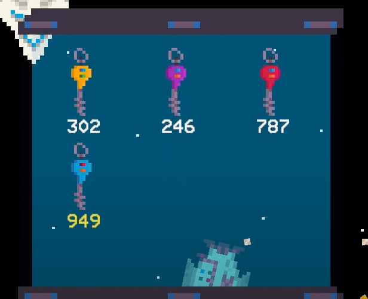
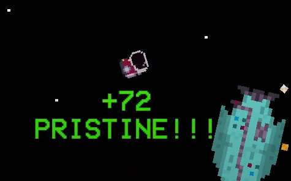
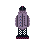
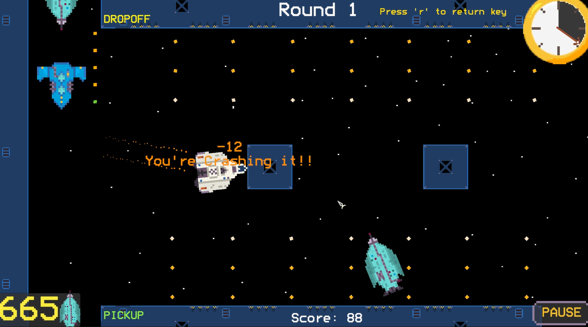
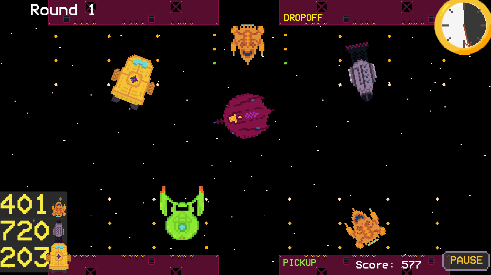
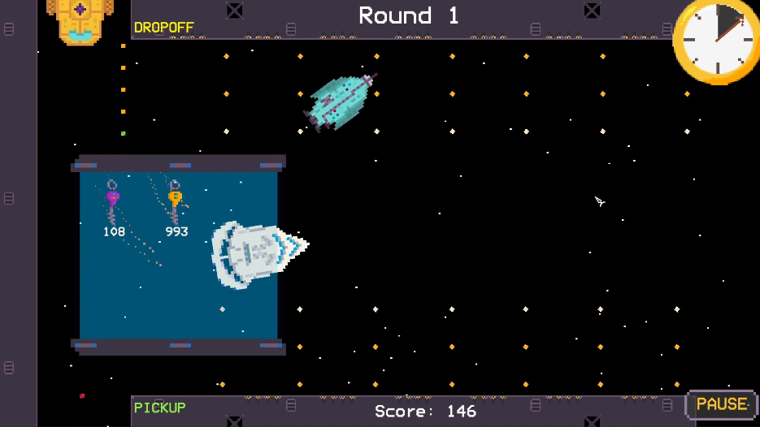
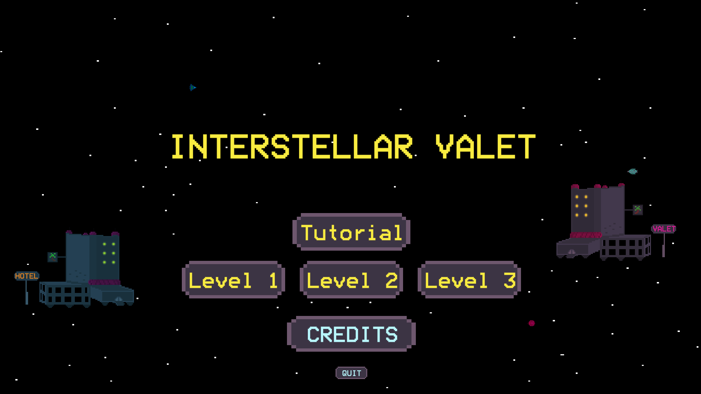

Interstellar Valet
Unity, C#
A top down interactive simulator where you act as a valet for spaceships. This game was created over the course of a semester for game dev club's challenge project, of which I was solely a programmer and digital/technical artist at the time.
My most successful contributions on this project included creating and implementing the art for the score messages when players earn or lose points, as well as designing the frontend and backend for the in game key system.
- Key System:
The key system for the game was simple, but effective. It consisted of two components: A singular KeyManager object, and multiple Key objects for each unique key. Whenever the player enters a new vehicle for the first time, a new Key is instantiated. Upon instantiation, that key will then hold an object reference to the ship that created it, as well as a unique ID for display purposes. This, combined with a clean animation and Unity's grid layout made for a satisfying game system that players enjoyed.

- Score Messages:
The score messages were an idea I had to provide another layer of feedback to the game beyond just a simple audio cue. Whenever score was gained or lost at the players location, it would spawn an animated blurb of text picked randomly from the GameManager.

- Misc. Notes:
I created all of the ship art for the game. In making them, I combined inspiration from popular space themed IPs like Outer Worlds, Star Trek, and Starfield, with the shape of ordinary objects around my house. For example, the turquoise colored ship is a combination of the Planet Express Ship from Futurama and a water bottle.




